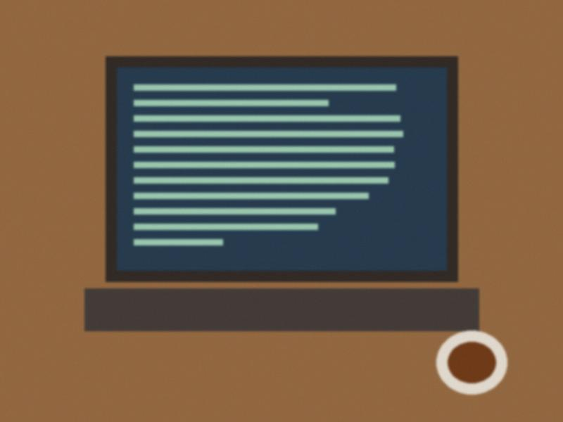

Archive for the ‘Home’ Category
Boxes
The kitchen is in boxes. The kettle is on top of the last one, with the cups inside it, wrapped in Dastan's shirts.…
♥ 60 · 1 comments
Spring and a decision
We decided. After the school year, in August, we go to Almaty. Dastan goes first in June to prepare the flat, then I…
♥ 126 · 0 comments
Dastan's news
Dastan's cousin in Almaty found a place for him in a building company, as a boiler engineer, the work he knows, with a…
♥ 105 · 1 comments
Winter in the quarantine
Fourth month in a row of the coal bill. The price is up by a third compared to the year before. Dastan got an extra…
♥ 139 · 0 comments
The speaker phone
My mother-in-law lives in the village and does not have the internet, so we call her on the phone twice a week and put…
♥ 42 · 0 comments
Dolls with masks
The sewing machine and the first pile of masks. Orders for school uniforms stopped, but I started to sew masks, two…
♥ 58 · 0 comments
The baby
Salima was born on 19 January, 3.4 kilos, at the maternity house in Iyık Janyl, in the middle of a snow day. Dastan…
♥ 75 · 2 comments
Everybody is on Tulpar
All the mothers' group has moved to Tulpar. The new app. The group chat of the school class is there, the kindergarten…
♥ 111 · 0 comments
Dastan's schedule
For people who ask what "shifts" means: it means that for two weeks I see my husband at breakfast, for two weeks at…
♥ 113 · 0 comments
Old New Year
The Old New Year, 13 January, the one nobody can explain. In the village they still celebrate it, with a table and a…
♥ 23 · 0 comments

Winter list
The winter list on the fridge door, in my handwriting. Every November I write a list on a piece of paper and hang it…
♥ 99 · 1 comments

First post, with a kettle
The kettle that started this. Dastan brought it from the bazaar in Talas. My sister Gulnara in Talas says everybody…
♥ 60 · 0 comments